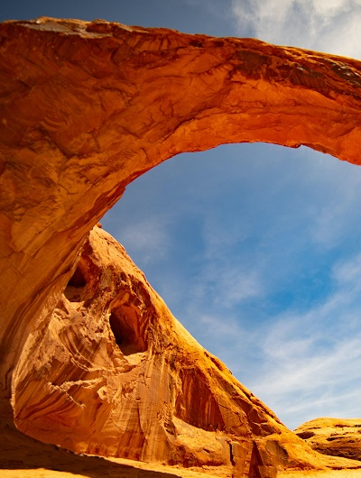

Places of Power
Throughout Vegas and the Mojave, there are places which carry a power all their own. These are places where the spirit realms touch a little closer than in other places, where social trauma have lead to walls of death to crumble, or ancient beings slumber beneath the surface. These are places which the various factions of Vegas claim as their own and tap for the purpose of channeling this power to their own ends. These places of rare and deeply coveted, so while they are crucial to success they also carry great risk. Always seeking support, these are the places which seek greater wisdom and the numbers to protect them...
The Dutchman
- AKA: The "Hidden Caern"
- Who Controls It?: Nuwisha, though the day to day power lies in the hands of Fera and "Ronin" Garou.
- Leadership: A loose coalition of potent and high ranking Fera
- Power Level: 4
- Totem: Coyote
- Type: Visions
- Veiled?: No, any open communication is allowed.
- Description: A truly ancient caern hidden away deep in the Mojave, the Dutchman Kiba once belonged to solely to the children of Coyote but has since expanded its membership to include a wide variety of Fera and outcast Garou, and even the rare few isolated willworker seeking refuge. The Dutchman would prove a powerful ally if any of the Pact could manage to convince its keepers to come out of hiding and aid the Awakened of Vegas, but for now, they are keeping a low profile.
- Other Notes: Occasionally moves, becomes "hidden," or otherwise disappears.
Glitter Gulch
- AKA: The Hidden Stronghold
- Who Controls It?: The Torchbearers
- Leadership: Syd Kowalcik
- Power Level: 1
- Totem: N/A
- Type: Crafts
- Veiled?: No, unless Sleepers are present.
- Description: Glitter Gulch is a phrase with two meanings. There is an actual club in downtown Vegas by that name, but the name has also come to indicate the circle of clubs, casinos and neon signs of the Fremont district. Containing the eponymous Glitter Gulch, the Downtown Grand, Golden Gate, Binion’s Horseshoe, and more; the Fremont district is iconic of old Vegas. Most of the casinos and hotels of the Fremont district host a Torchbearer presence and is connected via hidden tunnels and conduits, with the notable exception of the Golden Nugget being a long-held stronghold of Camarilla Vampires.
- Other Notes: This is a single room which represents all casinos and underground facilities which are considered part of the Glitter Gulch Chantry.
The Luxor
- AKA: The Sun Room
- Who Controls It?: The Traditions
- Leadership: Malcolm Henry
- Power Level: 3
- Totem: N/A
- Type: Wisdom
- Veiled?: The mortal portions are veiled if mortals are present, the Sun Chamber has no veil and characters may speak freely.
- Description: The peak of the Luxor pyramid is a shining beacon defying the night, so bright that some even claim it can be seen from space. What Sleepers do not know is that within the shining peak, a series of rooms is hidden within the light. This is the heart of the Black Pyramid Chantry and its center of power, as well as being the only part of the Chantry which is completely inaccessible to Sleepers (without an escort at least). Though the Traditions have long been cautious about letting in outsiders, the desperate situation of the last few years has led to a relaxation of restrictions on allied Awakened (Torchbearers and Garou alike are welcome so long as an established member vouches for them on their first visit).
- Other Notes: The Chantry and its node is officially in the peak of the pyramid and the room labeled "The Sun Chamber." The rest of the casino is open to the public and has a mortal leadership board, but is influenced by the Traditions.
Red Rock Canyon

- AKA: The Desert Commune
- Who Controls It?: The Traditions officially, though only the members are truly welcome.
- Leadership: Sarah Jamison
- Power Level: 3
- Totem: N/A
- Type: Plenty
- Veiled?: No, any open communication is allowed.
- Description: Deep in the Mojave, the Red Rock Canyon node is hidden away from Sleepers and Awakened alike. Only those trusted by the keepers of the Big Spring Chantry are allowed to know that there is even a Chantry hidden out in the valleys and canyons of the Mojave. Those who manage to find their way into the Red Rock Canyon node quickly find that their search for the Big Spring must continue, as only a fraction of its power echoes in the node and the members of the Chantry guard their secrets jealously.
- Other Notes: Unless membership is obtained, must enter through a carefully hidden archway which serves as a portal and the portal may be non-functional depending on circumstances.
Springs Preserve
- AKA: A Place Of Nature In The City Of Sin
- Who Controls It?: Garou
- Leadership: Joint leadership of the "Old Guard" of the Sept and the survivors of the former Rural Sept.
- Power Level: 2
- Totem: Lady Luck
- Type: Enigmas
- Veiled?: The public areas (non-Botanical Garden) is, but the Botanical Gardens room is not.
- Description: Though the public areas of the Preserve are open to the public, the Botanical Gardens have been locked away behind fences and signs declaring the area to be “Under Construction” for decades and many locals joke that it will never open to the public. The truth is that allies of the Sept of Second Chances have tied the Botanical Gardens up in so much red tape and bureaucracy, it truthfully will never open to the public. This area contains the bawn, heart, and other important sites of the Sept of Second Chances and their allies.
- Other Notes:
Stratosphere Tower
- AKA: The Eye of Big Brother
- Who Controls It?: The Technocratic Union
- Leadership: CEO Carla Verde
- Power Level: 1
- Totem: N/A
- Type: Gnosis
- Veiled?: Yes, with +1 Paradox Backlash to non-Technological paradigms
- Description: Looming high above Vegas, the tallest structure for miles around is the Stratosphere Tower. Built as a monument to man’s hubris and secretly intended to tap into one of the rare aerial Nodes which hovered far above the Vegas skyline. The Technocracy was instrumental in ensuring the peak of the tower encapsulated this rare mystic phenomena for their purposes and the highest floors of the tower were “reappropriated” shortly after completion of the structure for conversion into the stronghold of the Technocracy within Vegas proper. From high above the city, the Union watches those who scramble below, but something has changed recently. The Union has grown silent within its tower, dealing with an internal power struggle, leaving only Agents from a nearby construct in the desert to come into the city to harass shifters and mystic willworkers.
- Other Notes: Hostile to Mystic PCs, but in a non-agression pact with the Alliance